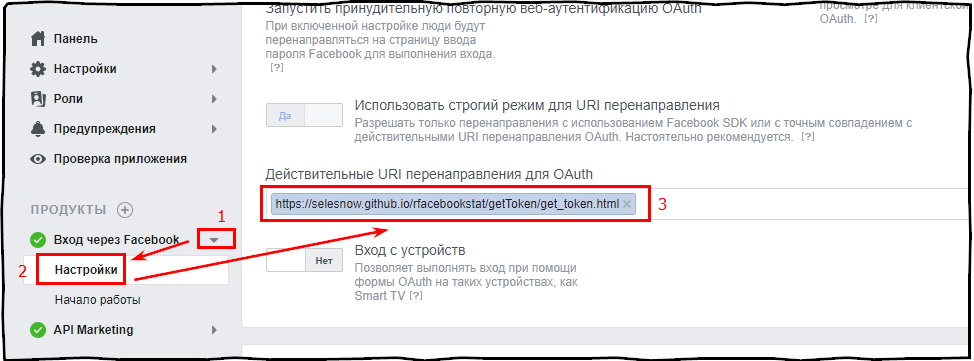

6 Модуль 2: Работа с API рекламных площадок.
6.1 Что такое API
Взаимодействие пользователя с различными программами осуществляется с помощью графического интерфейса программы, пользователь взаимодействует с элементами графического интерфейса, такими как кнопки, списки, меню и таким образом задаёт программе различные команды которая она должна выполнить.
Подобное взаимодействие между двумя приложениями осуществляется с помощью API интерфейса, вместо элементов графического интерфейса в API используются различные методы, с помощью которых одно приложение задаёт другому какие либо команды.
Взаимодейтсвие между двумя приложениями
Взаимодействие происходит с помощью HTTP запросов, которое одно приложение (клиент) отправляет другому (сервер), далее сервер обрабатывает входящий запрос и отправляет обратно клиенту ответ.
6.1.1 Типы HTTP запросов
HTTP запросы в свою очередь бывают разных типов, от типа запроса зависит действие которое каждый запрос выполняеи, наиболее часто встречающиеся это:
- PUT - Создание;
- GET - Чтение;
- POST - Изменение;
- DELETE - Удаление.
В свою очередь все запросы состоят из нескольких компонентов:
- URL – URL адрес сервера;
- Headers – Заголовки запроса;
- Body – Тело запроса.
Сервер, приняви обработав запрос от клиент, возвращает ответ, ответ от сервера имеет статус, в котором указано успешно ли был выполнен ваш запрос, все статусы деляться на 5 классов, класс статса определяется по первой цыфре его кода.
- 1xx – Информационные;
- 2xx – Запрос выполнен успешно;
- 3xx – Redirect;
- 4xx– Ошибка клиента;
- 5xx – Ошибка сервера.
6.2 Работа с API Google Ads
6.2.1 Как получить доступ к API Google Ads
Актуальная информация о том как получить доступ к API Google Ads можно получить в официциальноц справке.
Для доступа Вам необходимо:
- Создать центр клиентов, перейдите по этой ссылке и зарегистрируйте новый центр клиентов, обратите внимание, что центр клиентов можно создать толко в том Google аккаунте к которому ещё не привязан ниодин аккаунт Google Ads.
- Далее необходимо подать заявку на доступ к API, перейдите в Настройки (значок шестеренки в правом верхнем углу) > Настройки аккаунта (раскрывающееся меню) > Центр API AdWords (меню слева). Запонлите все поля и перейдите в форму заполненеия завки нажав на “Уровень доступа”.

- Далее ваша заявка будет рассмотрена и ободобрена.
- СОздаём приложение в Google Cloud, для этого переходим в консоль google cloud, создаём первый проект, и в нём идём в меню > API и сервисы > учётные данные. Google Cloud
- Далее жмём кнопку “создать учётные данные” и выбираем “Идентификатор клиента OAuth”.
 .
.
{kind=link}
6.2.2 Как устроен API Google Ads
Google Ads является наиболее популярной системой онлайн реклмы в миру, и имеет довольно мощный API интерфейс для работы со статистикой. API состоит из 48 отчётов (версия 201806):
- ACCOUNT PERFORMANCE REPORT
- AD CUSTOMIZERS FEED ITEM REPORT
- AD PERFORMANCE REPORT
- ADGROUP PERFORMANCE REPORT
- AGE RANGE PERFORMANCE REPORT
- AUDIENCE PERFORMANCE REPORT
- AUTOMATIC PLACEMENTS PERFORMANCE REPORT
- BID GOAL PERFORMANCE REPORT
- BUDGET PERFORMANCE REPORT
- CALL METRICS CALL DETAILS REPORT
- CAMPAIGN AD SCHEDULE TARGET REPORT
- CAMPAIGN CRITERIA REPORT
- CAMPAIGN GROUP PERFORMANCE REPORT
- CAMPAIGN LOCATION TARGET REPORT
- CAMPAIGN NEGATIVE KEYWORDS PERFORMANCE REPORT
- CAMPAIGN NEGATIVE LOCATIONS REPORT
- CAMPAIGN NEGATIVE PLACEMENTS PERFORMANCE REPORT
- CAMPAIGN PERFORMANCE REPORT
- CAMPAIGN SHARED SET REPORT
- CLICK PERFORMANCE REPORT
- CREATIVE CONVERSION REPORT
- CRITERIA PERFORMANCE REPORT
- DESTINATION URL REPORT
- DISPLAY KEYWORD PERFORMANCE REPORT
- DISPLAY TOPICS PERFORMANCE REPORT
- FINAL URL REPORT
- GENDER PERFORMANCE REPORT
- GEO PERFORMANCE REPORT
- KEYWORDLESS CATEGORY REPORT
- KEYWORDLESS QUERY REPORT
- KEYWORDS PERFORMANCE REPORT
- LABEL REPORT
- LANDING PAGE REPORT
- MARKETPLACE PERFORMANCE REPORT
- PAID ORGANIC QUERY REPORT
- PARENTAL STATUS PERFORMANCE REPORT
- PLACEHOLDER FEED ITEM REPORT
- PLACEHOLDER REPORT
- PLACEMENT PERFORMANCE REPORT
- PRODUCT PARTITION REPORT
- SEARCH QUERY PERFORMANCE REPORT
- SHARED SET CRITERIA REPORT
- SHARED SET REPORT
- SHOPPING PERFORMANCE REPORT
- TOP CONTENT PERFORMANCE REPORT
- URL PERFORMANCE REPORT
- USER AD DISTANCE REPORT
- VIDEO PERFORMANCE REPORT
Посмотреть актуальный список отчётов можно в официальной документации, там же доступно описание каждого отчёта.
Каждый отчёт отвечает за группировку данных и в свою очередь состоит из полей, каждое поле отчёта может иметь один из трёх типов.

Google Ads API report
- Атрибут - поле содержит фиксированное значение в соответствии с заданными группировками, добавление такого поля в отчет не приводит к появлению новой группировки;
- Сегмент - при выводе в отчете поле используется для группировки данных;
- Метрика - поле содержит числовое значение, рассчитанное в соответствии с заданными фильтрами и группировками.
Обращаячь к API вы запрашиваете какие либо поля из любого отчёта, и получается таким образом нужную вам статистику.
6.2.3 Пакет RAdwords
Для работы с API Google Ads в R существует пакет RAdwords.
Ранее, все пакеты которые мы устанавливали, мы скачивали и инсалировали из основного репозитория хранения данных в R CRAN, но пакеты в этом репозитории обновляются медленее чем dev версии пакетов ранящиеся у авторов на GitHub, для установки наиболее актуальных версий пакетов непосредственно из GitHub нам надо установить пакет *devtools** и далее устанавливать пакеты с помощью функции install_github, указав логин автора пакета и название репозитория в котором хранится пакет.
Например для установки пакета **RAdwords* из репозитория автора можно использовать следующий код:
install.packages("devtools")
library(devtools)
install_github("jburkhardt/RAdwords")Где jburkhardt/RAdwords это логин автора RAdwords на GitHub и название репозитория где он хранится, получить их можно из ссылки на репозиторий - https://github.com/jburkhardt/RAdwords.
Советую обновлять пакет как минимум раз в несколько месяцев, именно с таким интервалом Google релизит новую версию API Google Ads, и для того, что иметь доступ к новому функционалу необходимо обновлять пакет, обновляется пакет точно так же как и устанавливается, с помощью приведённого выше кода.
Теперь давайте перейдём к функциям пакета RAdwords, для того что бы получить список отчётов доступных в какой либо версии API можно воспользоваться функцией reports, для загрузки списка полей, доступных в каком либо отчёте есть функция metrics.
library(RAdwords)
reports(apiVersion = "201806") # список доступных отчётов## [1] "ACCOUNT_PERFORMANCE_REPORT"
## [2] "AD_CUSTOMIZERS_FEED_ITEM_REPORT"
## [3] "AD_PERFORMANCE_REPORT"
## [4] "ADGROUP_PERFORMANCE_REPORT"
## [5] "AGE_RANGE_PERFORMANCE_REPORT"
## [6] "AUDIENCE_PERFORMANCE_REPORT"
## [7] "AUTOMATIC_PLACEMENTS_PERFORMANCE_REPORT"
## [8] "BID_GOAL_PERFORMANCE_REPORT"
## [9] "BUDGET_PERFORMANCE_REPORT"
## [10] "CALL_METRICS_CALL_DETAILS_REPORT"
## [11] "CAMPAIGN_AD_SCHEDULE_TARGET_REPORT"
## [12] "CAMPAIGN_CRITERIA_REPORT"
## [13] "CAMPAIGN_GROUP_PERFORMANCE_REPORT"
## [14] "CAMPAIGN_LOCATION_TARGET_REPORT"
## [15] "CAMPAIGN_NEGATIVE_KEYWORDS_PERFORMANCE_REPORT"
## [16] "CAMPAIGN_NEGATIVE_LOCATIONS_REPORT"
## [17] "CAMPAIGN_NEGATIVE_PLACEMENTS_PERFORMANCE_REPORT"
## [18] "CAMPAIGN_PERFORMANCE_REPORT"
## [19] "CAMPAIGN_SHARED_SET_REPORT"
## [20] "CLICK_PERFORMANCE_REPORT"
## [21] "CREATIVE_CONVERSION_REPORT"
## [22] "CRITERIA_PERFORMANCE_REPORT"
## [23] "DESTINATION_URL_REPORT"
## [24] "DISPLAY_KEYWORD_PERFORMANCE_REPORT"
## [25] "DISPLAY_TOPICS_PERFORMANCE_REPORT"
## [26] "FINAL_URL_REPORT"
## [27] "GENDER_PERFORMANCE_REPORT"
## [28] "GEO_PERFORMANCE_REPORT"
## [29] "KEYWORDLESS_CATEGORY_REPORT"
## [30] "KEYWORDLESS_QUERY_REPORT"
## [31] "KEYWORDS_PERFORMANCE_REPORT"
## [32] "LABEL_REPORT"
## [33] "LANDING_PAGE_REPORT"
## [34] "MARKETPLACE_PERFORMANCE_REPORT"
## [35] "PAID_ORGANIC_QUERY_REPORT"
## [36] "PARENTAL_STATUS_PERFORMANCE_REPORT"
## [37] "PLACEHOLDER_FEED_ITEM_REPORT"
## [38] "PLACEHOLDER_REPORT"
## [39] "PLACEMENT_PERFORMANCE_REPORT"
## [40] "PRODUCT_PARTITION_REPORT"
## [41] "SEARCH_QUERY_PERFORMANCE_REPORT"
## [42] "SHARED_SET_CRITERIA_REPORT"
## [43] "SHARED_SET_REPORT"
## [44] "SHOPPING_PERFORMANCE_REPORT"
## [45] "TOP_CONTENT_PERFORMANCE_REPORT"
## [46] "URL_PERFORMANCE_REPORT"
## [47] "USER_AD_DISTANCE_REPORT"
## [48] "VIDEO_PERFORMANCE_REPORT"metrics(report = "CAMPAIGN_PERFORMANCE_REPORT", apiVersion = "201806")## [1] AccountCurrencyCode
## [2] AccountDescriptiveName
## [3] AccountTimeZone
## [4] ActiveViewCpm
## [5] ActiveViewCtr
## [6] ActiveViewImpressions
## [7] ActiveViewMeasurability
## [8] ActiveViewMeasurableCost
## [9] ActiveViewMeasurableImpressions
## [10] ActiveViewViewability
## [11] AdNetworkType1
## [12] AdNetworkType2
## [13] AdvertisingChannelSubType
## [14] AdvertisingChannelType
## [15] AllConversionRate
## [16] AllConversions
## [17] AllConversionValue
## [18] Amount
## [19] AverageCost
## [20] AverageCpc
## [21] AverageCpe
## [22] AverageCpm
## [23] AverageCpv
## [24] AverageFrequency
## [25] AveragePageviews
## [26] AveragePosition
## [27] AverageTimeOnSite
## [28] BaseCampaignId
## [29] BiddingStrategyId
## [30] BiddingStrategyName
## [31] BiddingStrategyType
## [32] BounceRate
## [33] BudgetId
## [34] CampaignDesktopBidModifier
## [35] CampaignGroupId
## [36] CampaignId
## [37] CampaignMobileBidModifier
## [38] CampaignName
## [39] CampaignStatus
## [40] CampaignTabletBidModifier
## [41] CampaignTrialType
## [42] ClickAssistedConversions
## [43] ClickAssistedConversionsOverLastClickConversions
## [44] ClickAssistedConversionValue
## [45] Clicks
## [46] ClickType
## [47] ContentBudgetLostImpressionShare
## [48] ContentImpressionShare
## [49] ContentRankLostImpressionShare
## [50] ConversionCategoryName
## [51] ConversionLagBucket
## [52] ConversionRate
## [53] Conversions
## [54] ConversionTrackerId
## [55] ConversionTypeName
## [56] ConversionValue
## [57] Cost
## [58] CostPerAllConversion
## [59] CostPerConversion
## [60] CostPerCurrentModelAttributedConversion
## [61] CrossDeviceConversions
## [62] Ctr
## [63] CurrentModelAttributedConversions
## [64] CurrentModelAttributedConversionValue
## [65] CustomerDescriptiveName
## [66] Date
## [67] DayOfWeek
## [68] Device
## [69] EndDate
## [70] EngagementRate
## [71] Engagements
## [72] EnhancedCpcEnabled
## [73] ExternalConversionSource
## [74] ExternalCustomerId
## [75] FinalUrlSuffix
## [76] GmailForwards
## [77] GmailSaves
## [78] GmailSecondaryClicks
## [79] HourOfDay
## [80] ImpressionAssistedConversions
## [81] ImpressionAssistedConversionsOverLastClickConversions
## [82] ImpressionAssistedConversionValue
## [83] ImpressionReach
## [84] Impressions
## [85] InteractionRate
## [86] Interactions
## [87] InteractionTypes
## [88] InvalidClickRate
## [89] InvalidClicks
## [90] IsBudgetExplicitlyShared
## [91] LabelIds
## [92] Labels
## [93] MaximizeConversionValueTargetRoas
## [94] Month
## [95] MonthOfYear
## [96] NumOfflineImpressions
## [97] NumOfflineInteractions
## [98] OfflineInteractionRate
## [99] PercentNewVisitors
## [100] Period
## [101] Quarter
## [102] RelativeCtr
## [103] SearchAbsoluteTopImpressionShare
## [104] SearchBudgetLostImpressionShare
## [105] SearchClickShare
## [106] SearchExactMatchImpressionShare
## [107] SearchImpressionShare
## [108] SearchRankLostImpressionShare
## [109] ServingStatus
## [110] Slot
## [111] StartDate
## [112] TotalAmount
## [113] TrackingUrlTemplate
## [114] UrlCustomParameters
## [115] ValuePerAllConversion
## [116] ValuePerConversion
## [117] ValuePerCurrentModelAttributedConversion
## [118] VideoQuartile100Rate
## [119] VideoQuartile25Rate
## [120] VideoQuartile50Rate
## [121] VideoQuartile75Rate
## [122] VideoViewRate
## [123] VideoViews
## [124] ViewThroughConversions
## [125] Week
## [126] Year
## 126 Levels: AccountCurrencyCode AccountDescriptiveName ... YearДля работы с API Google Ads вам для начала необходимо авторизоваться под каким либо Google аккаунтом, к которому привязан аккаунт Google Ads. Для авторизации вам необходимо использовать функцию doAuth(). При первом запуске этой функции будет открыт браузер, в котором вы выберите нужный аккаунт и подтвердите к нему доступ, при этом в рабочй директории будет создан файл .google.auth.RData, в котором будут хранится учётные данные для работы с API, в дальнейшем вам не придётся проходить авторизацию через браузер т.к. пакет будет запрашивать все необходимые для работы с API данные уже из локального файла.
Формирование и отправка запроса на загрузку каких либо данных из API Google Ads осуществляется в два этапа, с помощью функции statement мы формируем запрос, и отправляем с помощью функции getData.
# Составляем запрос
body <- statement(select = c("Date",
"CampaignName",
"Device",
"Clicks",
"Impressions",
"Cost"),
report = "CAMPAIGN_PERFORMANCE_REPORT",
where = "Impressions > 50",
start = "2018-07-01",
end = "2018-07-31")
# Запрашиваем данные
data <- getData(clientCustomerId = "123-456-7890",
google_auth = ads_auth,
statement = body,
includeZeroImpressions = TRUE)6.3 Работа с API Яндекс Директ
Для работы с API Яндекс Директ в R есть пакет ryandexdirect, его функции позволяют вам выполнять следующие действия:
- Авторизовываться в API.
- Получать список различных объектов рекламного кабинета, рекламных кампаний, групп объявлений, объявлений, для агентских аккаунтов можно запрашивать список клиентов, и параметры каждого клиента.
- Управлять показами на уровне рекламных кампаний, групп объявлений и объявлений.
- Загружать статистику.
- Загружать справочную информацию.
Для автоизации в API можно использовать функцию yadirAuth, но делать это необязательно т.к. при вызове любой из функций пакета изначально R ищет файл в котором хранятся учётные данные, и если не находит то вы автоматически переходите в браузер для прохождения процесса авторизации.
6.3.1 Пакет ryandexdirect
Устанавливать пакет ryandexdirect рекомендую из моего репозитория на GitHub с помощью команды devtools::install_github('selesnow/ryandexdirect').
Для прохождения процесса авторизации в ryandexdirect существует функция yadirAuth, но отдельно вызывать её нет необходимости, т.к. при запуске любой из функций пакета, изначально запускается процесс поиска файла хранящего учётные данные, если такой файл функция не находит то автоматически запускается процесс авторизации.
Все функции пакета содержат набор аргументов для работы с учётными данными: * Login - Логин на яндексе клиентского аккаунта, используется для авторизации под обычным, клиентским аккаунтом, а так же в названии файла в котором хранятся учётные данные. * AgencyAccount - Логин на яндексе для управляющего, агентского аккаунта, используется для авторизации под агентским аккаунтом, а так же в названии файла в котором хранятся учётные данные. * TokenPath - Путь к папке в которой вы храните файлы с учётными данными, при первом обращении к API из под какого либо аккаунта файл сохраняется в указанной папке, далее при работе с этим аккаунтом, функции пакета ищут его в указанной папке по аккаунту указанному в аргементе Login или AgencyAccount. * Token - Устаревший аргумент, не рекомендуемый к использованию, принимает токен доступа к API в виде строки, сохранён для воспроизведения кода написаного до версии 3.0.0.
6.3.1.1 Загрузка объектов из API Яндекс Директ
Для загрузки различных объектов из рекламного кабинета Яндекс Директ в пакете ryandecdirect есть одноимённые функции:
yadirGetCampaignList- Загрузка списка рекламных кампанийyadirGetAdGroups- Загрузка списка групп объявленийyadirGetKeyWords- Загрузка списка ключевых словyadirGetSiteLinks- Загрузка списка быстрых ссылокyadirGetBalance- Загрузка параметров общего счёта
library(ryandexdirect)
setwd("C:\\r_for_marketing_course\\Материалы курса\\Модуль 2\\Урок 3")
# Запрос объектов рекламного аккаунта
# Список рекламных кампаний
my_camp <- yadirGetCampaignList(Logins = "netpeak.vyacheslav",
TokenPath = "direct_tokens")
# Список групп объявлений
my_group <- yadirGetAdGroups(Login = "netpeak.vyacheslav",
TokenPath = "direct_tokens")
# Список ключевых слов
my_keyw <- yadirGetKeyWords(Login = "netpeak.vyacheslav",
States = "ON",
TokenPath = "direct_tokens")
# Список быстрых ссылок
my_links <- yadirGetSiteLinks(Login = "netpeak.vyacheslav",
TokenPath = "direct_tokens")
# Загрузка данных по общему счёту, ключая остаток
balance <- yadirGetBalance(Login = "netpeak.vyacheslav",
TokenPath = "direct_tokens")6.3.1.2 Загрузка справочной информации из API Яндекс Директ
Для загрузки справочной информации из API Яндекс Директ необхоимо использовать функцию yadirGetDictionary, передав в аргумент DictionaryName название справочника который хотите получить.
- Currencies - Курсы валют, валютные параметры и ограничения.
- MetroStations - Станции метрополитена (только для Москвы, Санкт-Петербурга и Киева).
- GeoRegions - Регионы.
- TimeZones - Часовые пояса.
- Constants - Ограничения на значения параметров.
- AdCategories - Особые категории рекламируемых товаров и услуг.
- OperationSystemVersions - Версии операционных систем для рекламы мобильных приложений.
- ProductivityAssertions - Параметр утратил актуальность и не возвращается.
- SupplySidePlatforms - Внешние сети (SSP).
- Interests - Интересы к категориям мобильных приложений.
geo <- yadirGetDictionary(DictionaryName = "GeoRegions",
Login = "netpeak.vyacheslav",
TokenPath = "direct_tokens")
cur <- yadirGetDictionary(DictionaryName = "Currencies",
Login = "netpeak.vyacheslav",
TokenPath = "direct_tokens")
adcategories <- yadirGetDictionary(DictionaryName = "AdCategories",
Login = "netpeak.vyacheslav",
TokenPath = "direct_tokens")
constant <- yadirGetDictionary(DictionaryName = "Constants",
Login = "netpeak.vyacheslav",
TokenPath = "direct_tokens")6.3.1.3 Управление показами
Помимо загрузки различных объектов из рекламного кабинета с помощью ryandexdirect вы можете останавливать и возобновлять показы на уровне рекламных кампаний, ключевых слов и объявлений.
Для остановки показов необходимо воспользоваться одной из функций: * yadirStopCampaigns - Остановка показов на уровне рекламных кампаний * yadirStopKeyWords - Остановка показов на уровне ключевых слов * yadirStopAds - Остановка показов на уровне объявлений
Возобновление показов осуществляется с помощью группы функций yadirStart: * yadirStartCampaigns - Возобновление показов на уровне рекламных кампаний * yadirStartKeyWords - Возобновление показов на уровне ключевых слов * yadirStartAds - Возобновление показов на уровне объявлений
# Список рекламных кампаний
my_camp <- yadirGetCampaignList(Logins = "netpeak.vyacheslav",
TokenPath = "direct_tokens")
# Запуск и остановка показов
# получаем список активных РК
active_campaign_before <- my_camp$Id[my_camp$State == "ON"]
# остановка рекламных кампаний
yadirStopCampaigns(Ids = c(30361157, 30361191),
Login = "netpeak.vyacheslav",
TokenPath = "direct_tokens")
# получаем список активных РК
my_camp_new <- yadirGetCampaignList(Logins = "netpeak.vyacheslav",
TokenPath = "direct_tokens")
active_campaign_after_stoped <- my_camp_new$Id[my_camp_new$State == "ON"]
# запускаем РК
yadirStartCampaigns(Ids = c(30361157, 30361191),
Login = "netpeak.vyacheslav",
TokenPath = "direct_tokens")
# получаем список активных РК
my_camp_new2 <- yadirGetCampaignList(Logins = "netpeak.vyacheslav",
TokenPath = "direct_tokens")
active_campaign_after_start <- my_camp_new$Id[my_camp_new2$State == "ON"]
# сверяем со списком который был до остановки
all.equal(active_campaign_before, active_campaign_after_start)В аргумент Id необходимо передавать вектор Id тех объектов по которым вы хотите запустить или остановить показы.
6.3.1.4 Загрузка статистики из API Яндекс Директ
API интерфейс Reports в Яндекс Директ похож на Google Ads, так же состоит из отчётов и полей. На момент последнего редактирования данного конспекта в API ЯНдекс Директ существует 8 отчётов.
- ACCOUNT_PERFORMANCE_REPORT - Статистика по аккаунту рекламодателя
- CAMPAIGN_PERFORMANCE_REPORT - Статистика по кампаниям
- ADGROUP_PERFORMANCE_REPORT - Статистика по группам объявлений
- AD_PERFORMANCE_REPORT - Статистика по объявлениям
- CRITERIA_PERFORMANCE_REPORT - Статистика по условиям показа
- CUSTOM_REPORT - Статистика с произвольными группировками
- REACH_AND_FREQUENCY_PERFORMANCE_REPORT - Статистика по медийным кампаниям. Отчет содержит только данные по кампаниям с типом «Медийная кампания», кампании остальных типов игнорируются
- SEARCH_QUERY_PERFORMANCE_REPORT - Статистика по поисковым запросам
Актуальный список отчётов можно найти по ссылке, список полей можно найти тут.
Все поля поделены на 4 группы:
фильтр — поле используется только для фильтрации данных и не может быть выведено в отчете;
сегмент — при выводе в отчете поле используется для группировки данных;
метрика — поле содержит числовое значение, рассчитанное в соответствии с заданными фильтрами и группировками;
атрибут — поле содержит фиксированное значение в соответствии с заданными группировками, добавление такого поля в отчет не приводит к появлению новой группировки.
Загрузка статистики осуществляется с помощью функции yadirGetReport, которая принимает следующие аргументы.
- ReportType - Тип отчёта
- DateRangeType - Отчётный период, принимает следующие значения (TODAY, YESTERDAY, LAST_3_DAYS, LAST_5_DAYS, LAST_7_DAYS, LAST_14_DAYS, LAST_30_DAYS, LAST_90_DAYS, LAST_365_DAYS, THIS_WEEK_MON_TODAY ,THIS_WEEK_SUN_TODAY, LAST_WEEK, LAST_BUSINESS_WEEK, LAST_WEEK_SUN_SAT, THIS_MONTH, LAST_MONTH, ALL_TIME, CUSTOM_DATE, AUTO)
- DateFrom и DateTo - Дата начала и завершения отчётного перода, используется только если в аргумент DateRangeType установлено значение CUSTOM_DATE.
- FieldNames - Список полей отчёта.
- FilterList - Вектор содержащий условия фильтрации, пример
c("Clicks GREATER_THAN 99","Impressions LESS_THAN 1000"). - IncludeVAT - Учитывать в расчёте трат НДС или нет.
- IncludeDiscount - Учитывать в расчёте трат скидку или нет.
- Login - Логин клиентского аккаунта.
- AgencyAccount - Логин агентского аккаунта, используется только при работе с агентским аккаунтом.
- TokenPath - Путь к папке в которую будет созранён файл с учётными данными, либо где уже есть данный файл.
Пример загрузки данных из обычного, клиентского аккаунта:
# Загрузка статистики
# Работа с обычным рекламным аккаунтом
# Статистика по рекламным кампаниям за пользовательский период с применением фильтра
my_camp_stat <- yadirGetReport(ReportType = "CAMPAIGN_PERFORMANCE_REPORT",
DateRangeType = "CUSTOM_DATE",
DateFrom = "2018-07-01",
DateTo = "2018-07-31",
FieldNames = c("Date", "CampaignId", "Clicks"),
FilterList = c("Clicks GREATER_THAN 1","Impressions LESS_THAN 1000"),
IncludeVAT = "YES",
IncludeDiscount = "NO",
Login = "netpeak.vyacheslav",
TokenPath = "direct_tokens")
# Статистика за прошлую рабочую неделю
my_daily_stat <- yadirGetReport(ReportType = "CUSTOM_REPORT",
DateRangeType = "LAST_BUSINESS_WEEK",
FieldNames = c("Date", "Clicks", "Impressions"),
Login = "netpeak.vyacheslav",
IncludeVAT = "YES",
IncludeDiscount = "NO",
TokenPath = "direct_tokens")Для работы с агентским аккаунтом вам необходимо указать в аргументе AgencyAccount логин агентского аккаунта, в аругмент Login логин клиентского аккаунта из которого вы хотите загрузить данные.
При работе с агентским аккаунтом в аргумент Login можно передавать вектор содержащий логини клиентских аккаунтов, загрузить список клиентов можно с помощью функции yadirGetClientList, загрузить дополнительные параметры клиентов из агентского аккаунта можно с помощью функции yadirGetClientParam.
# Работа с агентским рекламным аккаунтом
# загрузка списка клиентов
my_client <- yadirGetClientList(AgencyAccount = "netpeak.kz",
TokenPath = "direct_tokens")
# Загрузка данных о стране клиента, валюте аккаунта, оценка показателя качества аккаунтаа
my_cl_param <- yadirGetClientParam(AgencyAccount = "netpeak.kz",
TokenPath = "direct_tokens")
# загрузка статистики по клиентам
my_client_stat <- yadirGetReport(ReportType = "CUSTOM_REPORT",
DateRangeType = "LAST_BUSINESS_WEEK",
FieldNames = c("Clicks", "Impressions"),
AgencyAccount = "netpeak.kz",
Login = my_client$Login[5:11],
IncludeVAT = "YES",
IncludeDiscount = "NO",
TokenPath = "direct_tokens")6.4 Работа с API Facebook
Для работы с API Facebook мною был разработан пакет rfacebookstat, функции данного пакета позволяют.
- Загружать объекты из рекламного кабинета Facebook.
- Загружать статистику из рекламных кабинетов Facebook.
- Управлять доступами к реламным кабинетам Facebook.
Установить пакет rfacebookstat можно как из моего репозитория на GitHub, так и из основного репозитория CRAN.
- Установка с GitHub -
devtools::install_github('selesnow/rfacebokstat') - Установка с CRAN -
install.packages('rfacebookstat')
6.4.1 Создание приложения в Facebook
Для доступа к API Facebook вам необходимо создать приложение в веб интерфейсе Facebook.
1, В основном меню Facebook выберите пункт “Управление приложениями” или перейдите по этой ссылке.
Создание приложения в Facebook
- Нажмите кнопку “Добавить новое приложение”, которая находится в правом верхнем углу.
- Заполните поля в открывшемся дилоговом окне “Создайте ID приложения” и нажмите кнопку ЭСоздайте ID приложения"
- Добавьте продукты “API Marketing” и “Вход через Facebook”
Добавление продуктов
- В настройка продукта “Вход через Facebook” установите в качестве Действительные URI перенаправления для OAuth ссылку - https://selesnow.github.io/rfacebookstat/getToken/get_token.html 
6.4.2 Авторизация в API Facebook
Для прохождения процесса авторизации в API Facebook вам необходимо использовать 2 функции:
fbGetToken- Для получения краткосрочного токена.fbGetLongTimeToken- Для обмена кратсрочного токена на долгосрочный.
В качестве аргументов вам понадобится информация по идентификатору и секрету созданного на прошлом шаге приложения, найти эту информацию можно в его настройках, перейдя в меню “Основное.” 
# авторизация в API
# краткосрочный токен
my_st_token <- fbGetToken(app_id = 1672451129546934)
# долгосрочный токен
fb_token <- fbGetLongTimeToken(client_id = 1672451129546934,
client_secret = "a6c01acdb9a4100216de5f8874adbce5",
fb_exchange_token = my_st_token)
# Сохраняем токен
save(file = "fb_token.RData")Таким образом мы авторизовались в API, поменяли краткосрочный токен на долгосрочный, и сохранили его в рабочей директории в файл fb_token.RData.
6.4.3 Загрузка объектов из рекламного кабинета Facebook
Для загрузки различных объектов из рекламного кабинета в пакете rfacebookstat существуют одноимённые функции.
6.4.3.1 Загрузка объектов из бизнес менеджера
fbGetBusinessManagers- Загрузка списка доступных бизнес менеджеровfbGetProjects- Загрузка списка проектов из бизнес менеджераfbGetAdAccounts- Загрузка списка рекламных аккаунтовfbGetPages- Загрузка списка продвигаемых страниц из проектоаfbGetApps- Загрузка списка приложений
Аргументы которые встречаются в функциях для загрузки объектов из бизнес менеджера:
- access_token - Токен полученный при авторизации в API
- bussiness_id - ID бизнес менеджера
- source_id - ID бизнес менеджера или проекта
- projects_id - ID проекта
Пример
# бизнес менеджеры
my_fb_bm <- fbGetBusinessManagers(access_token = fb_token)
# проекты из бизнес менеджера
my_fb_proj <- fbGetProjects(bussiness_id = my_fb_bm$id,
access_token = fb_token)
# рекламные аккаунты
my_fb_acc <- fbGetAdAccounts(source_id = my_fb_bm$id,
access_token = fb_token)
# страницы
my_fb_page <- fbGetPages(projects_id = my_fb_proj$id, access_token = fb_token)
# приложения
my_fb_apps <- fbGetApps(projects_id = my_fb_proj$id, access_token = fb_token)6.4.3.2 Загрузка объектов из рекламного аккаунта
fbGetCampaigns- Загрузка списка рекламных кампанийfbGetAdSets- Загрузка списка групп объявленийfbGetAds-Загрузка списка объявленийfbGetAdCreative- Загрузка контента объявлений
Аргументы которые встречаются в функциях для загрузки объектов из рекламного аккаунта:
- accounts_id - ID рекламного кабинета, в формате act_00000000000
- access_token - Токен полученный при авторизации в API
Пример
# Объекты рекламного аккаунта
# кампании
my_fb_camp <- fbGetCampaigns(accounts_id = "act_262115113",
access_token = fb_token)
# группы объявлений
my_fb_adsets <- fbGetAdSets(accounts_id = "act_262115113",
access_token = fb_token)
# объявления
my_fb_ads <- fbGetAds(accounts_id = "act_262115113",
access_token = fb_token)
# контент объявлений
my_fb_ad_content <- fbGetAdCreative(accounts_id = "act_262115113",
access_token = fb_token)6.4.3.3 Загрузка статистики из рекламного аккаунта Facebook
Статистику из рекламного кабинета можно получить с помощью функции fbGetMarketingStat.
Аргументы доступные в функции fbGetMarketingStat:
accounts_id — ID рекламного аккаунта. Это обязательный аргумент. Вы можете получить его из URL, если перейдете в нужный рекламный аккаунт Facebook, указывайте ID аккаунта с приставкой «act_», как в примере: accounts_id = “act_000000000000”.
sorting — cортировка данных. Необязательный аргумент. На входе принимает список полей и направление сортировки (по возрастанию или по убыванию). Пример: reach_descending, impressions_ascending.
level — уровень детализации данных. Обязательный аргумент. Принимает значения ad, adset, campaign, account. Пример — level = “account”.
fields — список полей, по которым вы планируете получить данные. Обязательный аргумент. Пример: fields = “account_id,account_name,campaign_name,impressions,unique_impressions,clicks,unique_clicks,reach,spend”. Актуальный список всех доступных полей можно посмотреть в официальной документации к API по ссылке.
filtering — фильтр данных. Необязательный аргумент. Фильтры задаются в виде JSON объектов «ключ:значение». Необходимо прописать три свойства:
- field — поле, по которому будет осуществляться фильтрация;
- operator — оператор логического значения (‘EQUAL’, ‘NOT_EQUAL’, ‘GREATER_THAN’, ‘GREATER_THAN_OR_EQUAL’, ‘LESS_THAN’, ‘LESS_THAN_OR_EQUAL’, ‘IN_RANGE’, ‘NOT_IN_RANGE’, ‘CONTAIN’, ‘NOT_CONTAIN’, ‘IN’, ‘NOT_IN’, ‘ANY’, ‘ALL’, ‘NONE’);
- value — значения, по которому будет фильтроваться указанное поле. Пример: filtering = “[{‘field’:‘publisher_platform’,‘operator’:‘IN’,‘value’:[‘instagram’]}]
breakdowns — аргумент, с помощью которого можно получить данные в разбивке на различные сегменты. Список доступных срезов информации, а так же информацию о том как они могут друг с другом сочитаться можно посмотреть в официальной документации к API по ссылке.
date_start — начальная дата отчетного периода в формате YYYY-MM-DDD.
date_stop — конечная дата отчетного периода в формате YYYY-MM-DDD.
interval - временная разбивка, допустимые значения “day”, “week”, “month”, “quarter”, “year”, “overall”
- console_type - текстовое значение, тип ответов в консоли, принимает одно из двух значений:
- progressbar (по умолчанию) - для вывода в консоли прогресс бара, отображающего % загруженных даных.
- message - для вывода сообщений о процессе загрузки, например вывод сообщений о том, что был запущен механизм обхода пользовательского лимита на количество допустимых запросов к API Facebook.
- request_speed - скорость оправки запросов к API, в зависимости от уровня доступа вашего приложения установите следующее значение:
api_version — версия API Facebook, в формате v., например “v3.1”
access_token — токен доступа.
Пример
my_fb_stats <- fbGetMarketingStat(accounts_id = "act_262115113",
level = "campaign",
fields = "account_name,campaign_name,impressions,clicks",
breakdowns = "device_platform",
date_start = "2018-08-01",
date_stop = "2018-08-07",
interval = "day",
access_token = fb_token)6.4.3.4 Управление списком пользователей и доступами к рекламного аккаунта Facebook
fbGetAdAccountUsers- Получить список пользователей из рекламного аккаунтаfbDeleteAdAccountUsers- Удалить пользователя рекламого аккаунтаfbUpdateAdAccountUsers- Добавить пользователя в рекламный аккаунт.
Аргументы
- accounts_id - ID рекламного аккаунта в формате act_0000000000
- access_token - Токен доступа к API Facebook
- user_ids - ID пользователя
- role - Роль, которая определяет набор порав, которые будут у пользователя рекламного аккаунта, возможные значения: administator, advertiser, ad manager, analyst, sales, direct sales. Подробнее о полях можно узнать по ссылке.
Пример
# управление пользователями
# загрузка списка пользоватеелей
fb_acc_user <- fbGetAdAccountUsers(accounts_id = "act_262115113",
access_token = fb_token,
console_type = "message")
# удаление пользователя с ID 823041644481205
fbDeleteAdAccountUsers(user_ids = "823041644481205",
accounts_id = "act_262115113",
access_token = fb_token,
api_version = "v3.1")
# загрузка списка пользоватеелей
fb_acc_user2 <- fbGetAdAccountUsers(accounts_id = "act_262115113",
access_token = fb_token,
console_type = "message")
# сравнение списка пользователей до и после удаления пользователя с ID 823041644481205
all.equal(fb_acc_user, fb_acc_user2)
# добавление пользователя
fbUpdateAdAccountUsers(user_ids = "823041644481205",
accounts_id = "act_262115113",
role = "advertiser",
access_token = fb_token)6.5 Работа с API Вконтакте (vk.com)
Для работы с API Вконтакте необходимо установить пакет rvkstat, на данный момент пакет доступен только из моего репозитория на GitHub, для установки воспользуйтесь командой devtools::install_github('selesnow/rvkstat').
6.5.1 Создание приложения для работы с API Вконтакте
Для создания приложения перейдите по этой ссылке, и выберите в разделе платформа Веб-сайт, если вы планируете загрузить диалоги из сообщества выбирайте - Standalone-приложение.

Далее, если вы создали веб приложение перейдите в меню настроек приложения, и влючите Open API: 
После чего появятся настройки Open API, введите в них следующие значения: Адрес сайта: http://selesnow.github.io
Адрес сайта: selesnow.github.io
Доверенный redirect URI: https://selesnow.github.io/rvkstat/getCode/get_code.html
Доверенный redirect URI: https://selesnow.github.io/rvkstat/getCode/get_token.html
Доверенный redirect URI: https://oauth.vk.com/blank.html

Для начала работы с функциями пакета и для того, что бы с помощью формы получения токена или функции авторизации в Вконтакте получить токен разработчика используйте ID и Защищённый ключ приложения, вы в любой момент сможете найти их в настройках вашего приложения.

ID и секрет приложения
6.5.2 Авторизация в API Вконтакте
Для прохождения авторизации в rvkstat есть несколько функций, но рекомендуется использовать vkAuth.
myToken <- vkAuth(app_id = <ID Вашего Приложения>,
app_secret = <Защищённый Ключ Вашего Приложения>)6.5.3 Функции пакета rvkstat
Все функции пакета поделены на 4 группы, определить к какой группе относится функция можно из её названия, название группы к которой относится функция идёт сразу после префикса vk:
- GetGroupStat - загрузка статистики по сообществам Вконтакте.
- GetAd - загрузка данных из рекламного кабинета Вконтакте.
- GetDb - загрузка справочной информации из Вконтакте.
- GetUser - загрузка данных о конкретном пользователе Вконтакте.
6.5.4 Загрузка объектов из рекламного кабинета Вконтакте
vkGetAdCategories- получить справочник тематик рекламных объявленийvkGetAdAccounts- получить список рекламных аккаунтовvkGetAdClients- получить список клиентов из агентского аккаунтаvkGetAdCampaigns- получить список рекламных кампанийvkGetAds- получить список объявленийvkGetAdsLayout- получить внешний вид объявлений
Аргументы функций для работы с рекламным кабинетом:
- access_token - токен доступа к API, полученный с помощью функции
vkAuth - account_id - id рекламного кабинета
- client_id - id клиентского реклманого кабинета, при работе через агентский аккаунт
Пример
vk_auth <- vkAuth(app_id = 6656352, app_secret = "wSGrZuNEs1D4RbffGKDY")
# работа с рекламнымы аккаунтами
# получить справочник тематик рекламных объявлений
category <- vkGetAdCategories(access_token = vk_auth$access_token, api_version = "5.73")
# получить список рекламных аккаунтов
vk_acc <- vkGetAdAccounts(access_token = vk_auth$access_token)
# получить список клиентов из агентского аккаунта
vk_client <- vkGetAdClients(account_id = 1900000891,
access_token = vk_auth$access_token,
api_version = "5.73")
# получить список рекламных кампаний
vk_camp <- vkGetAdCampaigns(account_id = 1900000891,
client_id = 1602773233,
access_token = vk_auth$access_token)
# получить список объявлений
vk_ads <- vkGetAds(account_id = 1900000891,
client_id = 1602773233,
access_token = vk_auth$access_token)
# внешний вид объявлений
vk_ad_layout <- vkGetAdsLayout(account_id = 1900000891,
client_id = 1602773233,
access_token = vk_auth$access_token)6.5.5 Загрузка статистики из рекламного кабинета Вконтакте
Получить статистические данные из рекламного кабинета Вконтакте можно с помощью функции vkGetAdStatistics.
Аргументы функции vkGetAdStatistics
- account_id - Идентификатор рекламного кабинета, список всех доступных рекламных кабинетов можно получить с помщью функции vkGetAdAccounts.
- ids_type - Тип запрашиваемых объектов, которые перечислены в параметре ids, допустимые значения:
- ad — объявления
- campaign — кампании
- client — клиенты
- office — кабинет
- ids - Перечисленные через запятую id запрашиваемых объявлений, кампаний, клиентов или кабинета, в зависимости от того, что указано в параметре ids_type.
- period - Способ группировки данных по датам, допустимые значения:
- day — статистика по дням
- month — статистика по месяцам
- overall — статистика за всё время
- date_from - Начальная дата выводимой статистики. Используется разный формат дат для разного значения параметра period
- day: YYYY-MM-DD, пример: 2011-09-27 - 27 сентября 2011
- month: YYYY-MM, пример: 2011-09 - сентябрь 2011
- overall: 0
- date_to - Конечная дата выводимой статистики. Используется разный формат дат для разного значения параметра period:
- day: YYYY-MM-DD, пример: 2011-09-27 - 27 сентября 2011
- month: YYYY-MM, пример: 2011-09 - сентябрь 2011
- overall: 0
- api_version - Версия API к который вы будете обращаться, список актуальных версий доступен по ссылке.
- access_token - Токен доступа к API, полученный с помощью функций vkAuth
Пример
# Статистика рекламного кабинета
camp_stat <- vkGetAdStatistics(account_id = 1900000891,
ids = vk_camp$id,
ids_type = "campaign",
period = "day",
date_from = "2018-08-01",
date_to = "2018-08-08",
access_token = vk_auth$access_token)
# Статистика по клиентам агентского аккаунта
client_stat <- vkGetAdStatistics(account_id = 1900000891,
ids = vk_client$id,
ids_type = "client",
period = "month",
date_from = "2018-01-01",
date_to = "2018-08-08",
access_token = vk_auth$access_token,
api_version = "5.73")6.5.6 Загрузка статистики по сообществам и группам Вконтакте
Функции для работы со статистикой сообществ Вконтакте:
vkGetUserGroups- Список групп пользователяvkGetGroupStat- Общая статистика по сообществуvkGetGroupStatAge- Статистика по посетителям сообщества в разбивке по возрастуvkGetGroupStatGender- Статистика по посетителям сообщества в разбивке по полуvkGetGroupStatGenderAge- Статистика по посетителям сообщества в разбивке по полу и возрастуvkGetGroupStatCity- Статистика по посетителям сообщества в разбивке по городамvkGetGroupStatCountries- Статистика по посетителям сообщества в разбивке по странам
Аргументы
- date_from - начальная дата отчётного периода
- date_to - конечная дата отчётного периода
- group_id - id сообщества по которому хотите получить статистику
- access_token - токен полученный с помощью функции vkAuth
Пример
# статистика сообщества
# получить список всех групп пользователя
my_groups <- vkGetUserGroups(access_token = vk_auth$access_token)
# общаяя статистика по сообществу
gr_stat <- vkGetGroupStat(date_from = "2018-08-01",
date_to = "2018-08-08",
group_id = 119709976,
access_token = vk_auth$access_token)
# статистика по посетителям сообщества в разбивке по возрасту
gr_stat_age <- vkGetGroupStatAge(date_from = "2018-08-01",
date_to = "2018-08-08",
group_id = 119709976,
access_token = vk_auth$access_token)
# статистика по посетителям сообщества в разбивке по полу
gr_stat_gender <- vkGetGroupStatGender(date_from = "2018-08-01",
date_to = "2018-08-08",
group_id = 119709976,
access_token = vk_auth$access_token)
# статистика по посетителям сообщества в разбивке по полу и возрасту
gr_stat_gen_age <- vkGetGroupStatGenderAge(date_from = "2018-08-01",
date_to = "2018-08-08",
group_id = 119709976,
access_token = vk_auth$access_token)
# статистика по посетителям сообщества в разбивке по городам
gr_stat_city <- vkGetGroupStatCity(date_from = "2018-08-01",
date_to = "2018-08-08",
group_id = 119709976,
access_token = vk_auth$access_token)
# статистика по посетителям сообщества в разбивке по странам
gr_stat_country <- vkGetGroupStatCountries(date_from = "2018-08-01",
date_to = "2018-08-08",
group_id = 119709976,
access_token = vk_auth$access_token)6.6 Работа с API MyTarget
Для работы с API интерфейсом рекламной платформы MyTarget вам необходимо установить пакет rmytarget, данный пакет пока доступен только для установки из моего репозитория на GitHub, для усатановки выполните команду devtools::install_github("selesnow/rmytarget").
В rmytarget на данный момент всего 4 основные функции:
myTarGetCampaignList- Загрузка списка рекламных кампанийmyTarGetAdList- Загрузка списка объявленийmyTarGetStats- Загрузка статистики по рекламным кампаниям или ообъявлениямmyTarGetClientList- Загрузка списка клиентов из агентского аккаунта
6.6.1 Авторизация в API MyTarget
Процесс авторизации запускается при первом запуске любой из доступных в пакете функций, и состоит из следующих этапов:
- При запуске любой функции изначально начинается поиск в папке указанной в агрументе token_path, локального файла содержащего в себе учётные данные, поиск файла осуществляется по его названию login.mytar.Auth.RData, где вместо login будет подставлено значеник указанное вами в аргументе login.
- Если файл login.mytar.Auth.RData, в котором хранятся учётные данные был найден в указанной в аргументе token_path директории то запущенная функция загрузит из него необходимые для авторизации данные и продолжит работу по загрузке данных.
- Если файл login.mytar.Auth.RData, в котором хранятся учётные данные не был найден в указанной в аргументе token_path директории то будет запущен браузер, в котором вам необходимо подтвердить доступ
rmytargetк одному из ваших аккаунтов в MyTarget. - Далее вы будете перенаправлены на веб страницу на которой будет сгенерирован код подтверждения авторизации. Этот код необходимо скопировать и вставить в R консоль в ответ на запрос “Enter code from browser:”.
- Далее в консоли будет выведено сообщение “Do you want save API credential in local file (token_path/login.mytar.Auth.RData) for use it between R sessions?”, в качестве отвта на который вам необходимо ввести “y” или “yes”. После чего полученные учётные данные будут сохранены в директории указанной в аргументе token_path в файле login.mytar.Auth.RData, где вместо login будет подставлено значеник указанное вами в аргументе login.
- При следующем обращении к API с использованием любой из функций пакета авторизация будет проходить согласно пункту 1.
Внимание API MyTarget даёт вам возможность получить максимум 5 токнов для одновременной работы на 1 аккаунт, т.е. если вы работаете под агентским аккаунтом то вы можете получить 5 токенов для самого агентского аккаунта, и по 5 токенов для каждого привязанного клиентского аккаунта, поэтому всегда сохраняйте учётные данные в файл, иначе возможна ситуация когда вы не сможете пройти авторизацию в API. В случае утери всех 5 токенов. Токены автоматически удаляются по истечении месяца неактивности (истечения expires_in), поэтому в случае когда вы получили все 5 токенов, и потеряли их запросить новый вы сможете не ранее чем через месяц после последнего обращения к API с помощью одного из утерянных токенов.
Пример
library(rmytarget)
# обычный рекламный кабинет
# загрузка объектов из рекламного кабинета
camp <- myTarGetCampaignList(login = "client_account", token_path = "tokens")
ads <- myTarGetAdList(login = "client_account", token_path = "tokens")
# загрузка статистики
# статистика по рекламным кампаниям
camp_stat <- myTarGetStats(date_from = "2018-08-01",
date_to = "2018-08-31",
object_id = camp$id,
object_type = "campaigns",
login = "client_account",
token_path = "tokens")
# статистика по объявлениям
ad_stats <- myTarGetStats(date_from = "2018-08-01",
date_to = "2018-08-31",
object_id = ads$id,
object_type = "banners",
login = "client_account",
token_path = "tokens")
# агентский рекламный кабинет
clients <- myTarGetClientList(login = "agency_account", token_path = "tokens")6.7 Загрузка данных из Google Analytics
Для работы с API в R существует несколько пакетов, я пробовал работать как минимум с четырмя, но наиболее удобным и многофункциональным для меня был пакет RGA разработанный Артёмом Клевцовым. Для установки воспользуйтесь командой install.packages("RGA").
6.7.1 Какие API интерфейсы доступны в Google Analytics
В Google Analytics доступно 5 API интерфейсов.
- Core Reporting API - Запрашивайте параметры и показатели для создания специальных отчетов.
- Management API - Просматривайте аккаунты, свойства, представления, фильтры, разрешения и т. д. и управляйте ими.
- Multi-Channel Funnels Reporting API - Получайте отчеты по многоканальным последовательностям для анализа сложных путей конверсии.
- Real Time Reporting API - Получайте отчеты в режиме реального времени, чтобы знать, что происходит на вашем ресурсе прямо сейчас.
- Metadata API - Просматривайте список параметров, показателей, а также их атрибутов.
6.7.2 Авторизация в API Google Analytics
При работе с пакетом RGA вы, в ходе одной R сессии, можете обращаться ко множеству Google аккаунтов, эо может понадобится если вам необходимо загрузить данные более чем из 100 аккаунтов Google Analytics т.к. существует ограничение 100 аккаунтов Analytics на одного пользователя.
Для работы сразу под несколькими пользователями вы можете с помощью функции authorize и аргумента username авторизоваться под несколькими пользователями, при этом учётные данные каждого пользователя будут сохранены в локальные файлы, название файла будет выглядеть как .username*@gmail.com-token.rds, где username* будет аналогичен значению указанному в аргументе username.
Пример авторизации под несколькими аккаунтами.
r.for.marketing <- authorize(username = "r.for.marketing")
alsey.netpeak <- authorize(username = "alsey.netpeak")6.7.3 Работа с Management API
Основные функции для работы с Management API
list_accounts- Загрузка списка доступных аккаунтов для пользователяlist_profiles- Загрузка списка доступных представленийlist_webproperties- Загрузка списка доступных ресурсовlist_goals- Загрузка списка настроенных целейlist_filters- Загрузка списка фильтровlist_segments- Загрузка списка сегментов
Основные аргументы перечисленных выше функций
- accountId - Id аккаунта Google Analytics
- webPropertyId - Id представления Google Analytics
- profileId - Id ресурса Google Analytics
- token - Объект созданный с помощью функции
authorizeхранящий учётный данные
Пример
my_ga_accounts <- RGA::list_accounts() # загрузка списка аккаунтов
my_ga_profiles <- RGA::list_profiles() # загрузка списка ресурсов
my_ga_views <- RGA::list_webproperties() # загрузка списка представлений
my_goals <- RGA::list_goals() # загрузка списка целей
my_filters <- RGA::list_filters(accountId = 44472206) # список фильтров
my_segments <- RGA::list_segments() # загрузка списка сегментов6.7.4 Работа с Core Reporting API
Функция get_ga позволяет вам запрашивать данные из Core Reporting API, её основные аргументы:
- profileId - Id представления Google Analytics
- start.date - Дата начала отчётного периода
- end.date - Дата окончания периода
- metrics - Список метрик отчёта, актуальный список доступен по ссылке
- dimensions - Список группировок отчёта, актуальный список доступен по ссылке
- sort - Сортировка отчёта, поля по которым необходимо отсортировать данные, для сортировки по убыванию перед названияем поля необходимо поставить минус
- filters - Условия фильтрации, смотрите пример кода
- операторы при фильтрации:
- == - точное соответсвие
- != - Не соответствует
- =@ - содержит подстроку
- !@ - не содержит подстроку
- =~ - соответсвуе регулярному выражени
- !~ - не соответвует регулярному выражению
- операторы при фильтрации:
- segment - Применить сегмент, вы можете либо описать динамический сегмент, либо указать Id нуюного сегмента, смотрите пример кода ниже
- samplingLevel - Уровень семплирования, для наибольшей точности данных укажите “HIGHER_PRECISION”
- fetch.by - Аргумент позволяющий разбить ваш запрос на подзапросы по времни, для обхода семплирования, принимает значения “day”, “week”, “month”
- token - Объект созданный с помощью функции
authorizeхранящий учётный данные
Пример
# Core API
my_core_data <- RGA::get_ga(profileId = "ga:170507937",
start.date = "14daysAgo",
end.date = "yesterday",
metrics = "ga:users,ga:sessions,ga:bounces",
dimensions = "ga:date,ga:source,ga:medium",
sort = "-ga:date",
filters = "ga:medium!=cpc,ga:source=@g", # "," - ИЛИ, ";" - И
segment = "sessions::condition::ga:bounces>0",
samplingLevel = "HIGHER_PRECISION",
fetch.by = "day",
token = alsey.netpeak)6.7.5 Работа с Multi-Channel Funnels API
Для загрузки цепочек взаимодействия пользователя на пути к совершению конверсии через Multi-Channel Funnels API вы должны использовать функцию get_mcf.
Аргументы
- profileId - Id представления Google Analytics
- start.date - Дата начала отчётного периода, статичная или относительная, смотрите пример кода ниже
- end.date - Дата окончания отчётного периода, статичная или относительная, смотрите пример кода ниже
- dimensions - Список полей-группировок, актуальный список полей доступен по ссылке
- metrics - Список полей-метрик, актуальный список полей доступен по ссылке
- samplingLevel - Уровень семплирования, рекомендуемое значение “HIGHER_PRECISION”
- token - Объект созданный с помощью функции
authorizeхранящий учётный данные
Пример
# Multi-Channel Funnels API
my_mcf_data <- RGA::get_mcf(profileId = "ga:170507937",
start.date = "14daysAgo",
end.date = "yesterday",
dimensions = "mcf:conversionDate, mcf:mediumPath",
metrics = "mcf:assistedConversions",
samplingLevel = "HIGHER_PRECISION",
token = alsey.netpeak)6.7.6 Работа с Real time reporting API
Функция get_realtime позволяет вам получить данные из Real time reporting API.
Аргументы
- profileId - Id представления Google Analytics
- dimensions - Список полей-группировок, актуальный список полей доступен по
- metrics - Список полей-группировок, актуальный список полей доступен по
- sort - Список полей полей для сортировки данных
- token - Объект созданный с помощью функции
authorizeхранящий учётный данные
Пример
my_real_time_API <- RGA::get_realtime(profileId = "ga:6056790",
dimensions = "rt:source, rt:medium, rt:country",
metrics = "rt:activeUsers",
sort = "-rt:activeUsers",
token = alsey.netpeak)6.8 Загрузка данных из API Яндекс Метрики
Для работы с API интерфейсами яндекс метрики мной был разработа пакет rym. Для установки пакета используйте команду devtools::install_github("selesnow/rym").
Для взаимодействия с Яндекс Метрикой существуют следующие API интерфейсы:
- API управления - Позволяет вам получить информацию о таких объектах как счётчики, цели, фильтры, сегменты и доступы к счётчику.
- API отчётов - Позволяет получать информацию о статистике посещений сайта и другие данные, не используя интерфейс Яндекс.Метрики.
- API, совместимым с Google Analytics Core Reporting API (v3) - Позволяет получать информацию о посещаемости сайта и другие данные используя привычные параметры запросов при сборе статистики, если ранее вы работали с Google Analytics Core Reporting API (v3).
- Logs API - позволяет получать неагрегированные данные, собираемые Яндекс.Метрикой.
6.8.1 Авторизация для работы с API Яндекс Метрики
Для авторизации можно использовать функцию rym_auth, но в целом процесс авторизации устроен так же как и в пакетах rmytarget и ryandexdirect, т.е. нет еобходимосьт отдельно запускать функцию для прохождния авторизации, при запуске любой из функций доступных в rym будет запущен процесс поиска файла в котором хранятся учётные данные и если такой файл не будет найден то откроется браузер для прохождения авторизации, и полученные учётные данные будут сохранены в файл, в папке которую вы указываете в аргументе token.path.
В ходе одной R сессии вы можете авторизоваться и работать под разными пользователями Яндекс Метрики, при этом для каждого пользователя будет создан отдельный файл в котором будут хранится его учётные данные для работы с API Яндекс Метрики.
rym_auth(login = "vipman.netpeak", token.path = "metrica_token")
rym_auth(login = "selesnow", token.path = "metrica_token")6.8.2 Функции для работы с API управления Яндекс Метрики
rym_get_counters- Загрузка доступных для пользователя счётчиков Яндекс Метрикиrym_get_goals- Загрузка списка целейrym_get_filters- Загрузка списка фильтровrym_get_segments- Загрузка списка настроенных сегментовrym_users_grants- Загрузка списка пользователей у которых есть доступ к счётчики с уровнем досупа
Основные аргументы функций API управления
- counter - Номер счётчика Яндекс Метрики
- login - Логин пользователя Яндекс Метрики
- token.path - Путь к папке в которой хранятся файлы с учётными данными
Пример
# API Управления
# получить список счётчиков
selesnow.counters <- rym_get_counters(login = "selesnow",
token.path = "metrica_token")
vipman.counters <- rym_get_counters(login = "vipman.netpeak",
token.path = "metrica_token")
# получить список целей
my_goals <- rym_get_goals(counter = 10595804,
login = "vipman.netpeak",
token.path = "metrica_token")
# получить список фильров
my_filter <- rym_get_filters(counter = 10595804,
login = "vipman.netpeak",
token.path = "metrica_token")
# получить список сегментов
my_segments <- rym_get_segments(counter = 10595804,
login = "vipman.netpeak",
token.path = "metrica_token")
# получить список пользователей счётчика
users <- rym_users_grants(counter = 10595804,
login = "vipman.netpeak",
token.path = "metrica_token")6.8.3 Загрузка данных из API отчётов Яндекс Метрики
Для загрузки данных из API отчётов необходимо использовать функцию rym_get_data.
Аргументы
- counters - Id счётчиков из коорых вы хотите получить данные
- date.from - Начальная дата
- date.to - Конечная дата
- dimensions - Список группировок, актуальный список доступных группировок можно найти по ссылке
- metrics - Список метрик, актуальный список доступных группировок можно найти по ссылке
- sort - Список полей по которым будет осуществляться сортировка данных
- login - Логин пользователя Яндекс Метрики
- token.path - Путь к папке в которой хранятся файлы с учётными данными
Пример
# API отчётов
reporting.api.stat <- rym_get_data(counters = "23660530,10595804",
date.from = "2018-08-01",
date.to = "yesterday",
dimensions = "ym:s:date,ym:s:lastTrafficSource",
metrics = "ym:s:visits,ym:s:pageviews,ym:s:users",
sort = "-ym:s:date",
login = "vipman.netpeak",
token.path = "metrica_token",
lang = "en")6.8.4 Загрузка данных из Logs API Яндекс Метрики
Функция rym_get_logs позволяет вам получить сырые данные из Logs API.
Аргументы
- counter - Id счётчика Яндекс Метрики
- date.from - Начальная дата
- date.to - Конечная дата
- fields - Список полей которые необходимо загрузить, актуальный список доступный полей можно найти по ссылки в зависимости от источника логов, список полей по просмотрам, список полей по визитам.
- source - Источник логов, visits — визиты. hits — просмотры.
- login - Логин пользователя Яндекс Метрики
- token.path - Путь к папке в которой хранятся файлы с учётными данными
Пример
logs.api.stat <- rym_get_logs(counter = 23660530,
date.from = "2018-08-01",
date.to = "2018-08-05",
fields = "ym:s:date,
ym:s:lastTrafficSource,
ym:s:referer",
source = "visits",
login = "vipman.netpeak",
token.path = "metrica_token")6.8.5 Загрузка данных из API Яндекс Метрики совместимого с Core Reporting API Google Analytics
Для работы с API Яндекс Метрики совместимым с Core Reporting API Google Analytics стоит использовать функцию rym_get_ga.
Аргументы
- counter - Id счётчика Яндекс Метрики
- dimensions - Список группировок, актуальные поля для группировки данных вы можете найти в справочнике
- metrics - Список загружаемых метрик, актуальный справочник метрик можно найти по ссылке
- start.date - Начальная дата
- end.date - Конечная дата
- sort - Поля для сортировки данных
- login - Логин пользователя Яндекс Метрики
- token.path - Путь к папке в которой хранятся файлы с учётными данными
Пример
ga.api.stat <- rym_get_ga(counter = "ga:22584910",
dimensions = "ga:date,ga:source",
metrics = "ga:sessions,ga:users",
start.date = "2018-08-01",
end.date = "2018-08-05",
sort = "-ga:date",
login = "selesnow",
token.path = "metrica_token")6.9 Работа с Google Search Console
Получить данные о посещаемости и видимости вашего сайта из Google Search Console в R можно с помощью пакета searchConsoleR, устанавливать его необходимо из репозитория на GitHub с помощью команды devtools::install_github("MarkEdmondson1234/searchConsoleR").
По больщому счёту для работы с Search Console вам достаточно трёх функций:
scr_auth- Авторизацияlist_websites- Загрузка списка сайтов достпуных в Search Console под авторизованным аккаунтомsearch_analytics- Загрузка статистики по сайту из Google Search Console
Пример
library(searchConsoleR)
library(googleAuthR)
# go to work directory
setwd("C:\\r_for_marketing_course\\Материалы курса\\Модуль 2\\Урок 9")
# Auth
service_token <- scr_auth()
# Get Sites
web_sites <- list_websites()
# Get Stat
gsc_stat <- search_analytics(siteURL = "http://selesnow.github.io/",
startDate = "2018-08-01",
endDate = "2018-08-13",
dimensions = c("date", "page", "query"),
searchType = "web",
rowLimit = 5000)Аргументы функции search_analytics
- siteURL - URL сайта по которому вы хотите получить статистику из Google Search Console
- startDate - Начальная дата
- endDate - Конечная дата
- dimensions - Название полей которые вы хотите загрузить, возможные значения: “date”, “country”, “device”, “page”, “query”, “searchAppearance”
- searchType - ФИльтр по типу поиска: “web”, “image”, “video”
- dimensionFilterExp - Фильтр, может применяться к любому полю, например (“device==TABLET”, “country~~GBR”)
- операторы фильтрации:
- ‘~~’ - содержит
- ‘==’ - точное соответсвие
- ‘!~’ - не содержит
- ‘!=’ - не соответствует
- операторы фильтрации:
6.9.1 Как обойти ограничение в 5000 строк на 1 запрос
При стандартном обращении к API Google Search Console вы можете получить данные не превышающие 5000 строк, но если вы используете какую либо фильтрацию это ограничение не работает, даже если отфильтрованный массив данных содержит более 500 строк.
В связи с чем если вы с помощью цикла отфильтруете запрашиваемые данные например по типу устройста, и соберёте потом полученныенные данные в одну таблицу ы обойдёте это ограничение.
*Пример коа для обхода ограничения**
devices <- c("DESKTOP", "MOBILE", "TABLET")
sc_result <- list()
for (dev in devices) {
n <- length(sc_result) + 1
sc_result[[n]] <- search_analytics(siteURL = "http://selesnow.github.io/",
startDate = "2018-08-01",
endDate = "2018-08-13",
dimensions = c("date", "page", "query"),
dimensionFilterExp = paste0("device==", dev),
searchType = "web")
}
gsc_stat <- dplyr::bind_rows(sc_result)В примере выше мы сначала создаём вектор devices который в качестве элементов содержит названия всех типов устройств.
Далее мы создаём пустой объект класса list в который позже будем по очереди добавлять полученные пок аждому типу устройства данные.
На следующем шаге мы создаём цикл for, в котором по очереди перебираем каждый элемент из списка devices и подставляем этот элемент в аргумент dimensionFilterExp функции search_analytics.
По завершению цикла мы соединяем полученные результаты по каждому типу устройства в один даат фрей gsc_stat с помощью команды dplyr::bind_rows(sc_result).
6.10 Работа с Google Trends
Для загрузки данных из Google Trends можно использовать пакет gtrendsR, для его загрузки выполните команду devtools::install_github('PMassicotte/gtrendsR').
Основная функция пакета gtrends bvttn cktle.obt аргументы:
- keyword - Запросы по которым вы хотите получить динамику колическа поисковых запросов
- geo - Список стран по которым вам необходимо получить данные
- gprop - Продукт Google, для которого выполняется запрос тренда, возможные значения: “web”, “news”, “images”, “froogle”, “youtube”
- time - Период за который вы запрашиваете данные, возможные значения:
- “now 1-H” - Данные за последний час
- “now 4-H” - Данные за последние 4 часа
- “now 1-d” - Данные за последний день
- “now 7-d” - Данные за последние 7 дней
- “today 1-m” - Данные за последние 30 дней
- “today 3-m” - Данные за последние 90 дней
- “today 12-m” - Данные за последние 12 месяцев
- “today+5-y” - Данные за последние 5 лет
- “all” - Данные за всё время, начиная с 2004 года
- “Y-m-d Y-m-d” - Временной интервал между двумя датами (например: 2010-01-01 2010-04-03)
Пример загрузки данных с Google Trends
library(gtrendsR)
# query
res <- gtrends(keyword = c("google adwords",
"яндекс директ",
"google ads",
"facebook ads"),
geo = c("RU", "UA", "KZ", "BY"),
gprop = "web",
time = "2018-04-01 2018-08-01")После выполнения приведённого выше кода вы получите список res, который будет содержать несколько дата фреймов:
- interest_by_city - Данные в разбивке по городам
- interest_by_region - данные в разбивке по регионам
- interest_over_time - данные с разбивкой по времени
Для того, что бы сохранить в качестве отдельного объекта нужные вам данные вы можете воспользоваться следующим кодом.
# results
by_city <- res$interest_by_city
by_region <- res$interest_by_region
over_time <- res$interest_over_time6.10.1 Манипуляция с данными полученными из Google Trends
Данные полученные из Google Trends являются неплохим примером для работы с рассмотренным на первом модуле пакете tidyr.
# to tidy
library(tidyr)
library(dplyr)
# by keywords
tidy_res <- over_time %>%
group_by(date, keyword) %>% # grouping
summarise(hits = sum(hits)) %>% # aggregate
spread(key = keyword , value = hits) # tidying
# by country
tidy_res_country <- over_time %>%
group_by(date, geo) %>% # grouping
summarise(hits = sum(hits)) %>% # aggregate
spread(key = geo , value = hits) # tidyingВыполнив приведённый выше код вы преобразете данные из длинного формата в широкий, и сможете проанализировать динамику изменения каждого поискового запроса в определённый период времени.
6.11 Парсинг веб сайтов
Забегая наперёд скажу, что данный урок (2 модуль, 10 урок) значительно проще понять при просмотре видео, чем при чтении конспекта курса.
Итак, наиболее удобный способ сбора данных с веб страниц в R предосталвяет пакет rvest, с помощью его функций вы можете:
- Собирать информации с веб страниц с помошью css селекторов или xpath локаторов.
- Взаимодейтсвовать с различными элементами сайта, например отправлять формы.
- Имитировать пользовательские сессии, начиная от процесса авторизации.
6.11.1 Поиск элементов на веб странице
Перед тем как приступить к парсингу HTML страницы е необходимо загрузить в R с помощью команды simpl_html <- read_html("test_html_page.html"), ’nf эта команда загрузит страницу которую вы можете найти в материалах курса в папаке “Модуль 2/Урок 10/test_html_page.html”, после чего в вашем рабочем окружении будет создан объект содержащий всю информацию из HTML страницы. В качестве аргумента функции можно указывать путь к локальной HTML странице как в приведённом примере, так и URL адрес любой доступной в интернете HTML страницы.
HTML разметка тестовой, локальной страницы
<h1> Is the test page </h1>
<div class="simple_text">
<p id='first_paragraph'> Is a test page for web scrapping by R and R package rvest</p>
<p> For detail you can go to the rvest tutorial by this <a id='link1' href='https://stat4701.github.io/edav/2015/04/02/rvest_tutorial/'>link</a>.</p>
</div>
<div id="photo" title='ph'>
<img src="https://i.ytimg.com/vi/jyqnbUNEO00/maxresdefault.jpg" width="500">
</div>
<h2> Simple table for test </h2>
<table class='tab' id='t1' border="1" cellpadding="5" title='test_tab'>
<tr><td>Id</td><td>Value</td><td>Age</td></tr>
<tr><td>1</td><td>Alexey</td><td>34</td></tr>
<tr><td>2</td><td>Nick</td><td>23</td></tr>
<tr><td>3</td><td>Denis</td><td>38</td></tr>
<tr><td>4</td><td>Andrey</td><td>29</td></tr>
</table>
<h2> Total rows in table </h2>
<p id='last_paragraph' class="simple_text"> Test table has four rows.
<p id="update_date"><i>2018-08-15</i></p>Для поиска какого либо конкретного элемента странцинаиболее удобно использовать CSS селекторы. Гораздо проще вам будет разобраться в данной теме если вы имеете хотя бы базовые знания в HTML разметке, на всякий случай приведу несколько определений которые мы будем использовать.
- HTML тег - элемент языка разметки гипертекста. Текст, содержащийся между начальным и конечным тегом, отображается и размещается в соответствии со свойствами, указанными в начальном теге.
- Атрибуты - У тега могут быть свойства, называемые атрибутами, дающие дополнительные возможности форматирования текста. Они записываются в виде сочетания: имя атрибута-значения, причём текстовые значения заключаются в кавычки.
- Атрибут id - Определяет уникальный идентификатор HTML элемента (его значение должно быть уникально для всего HTML документа).
- Атрибут class - Определяет группу HTML элементов.
На самом деле CSS селекторы это тема для отдельного большого курса, но в принципе вы без проблем можете найти какое нибудь видео на youtube или статью для того, чо бы более глубоко с ними ознакомистся, в этой книге я приведу пример наиболее простых и часто используемых селекторов.
6.11.1 update_date - Поиск элемента по его id, в данном случае поиск элемента с id=“update_date”
- .simple_text - Поиск элемента по его классу, в данном случае поиск элемента с class=“simple_text”
- [title] - Поиск по наличию атрибута, в данном случае мы выдерем все элементы в тегах которых присутвует атрибут title
- [title=‘test_tab’] - Поиск элементов по значению атрибута, в данном случае мы выберем элементы в которых атрибут title равен “test_tab”
- table - Поиск элемента по названия тега, в данном случае мы выберем все элементы которые находятся внутри тега table
- div p a - Вложенные селекторы, в данном случае мы сначала ищем элемент внутри тега div, далее внутри него ищем элемент находящийся внутри тега p после чего внутри него ищем элемент внутри тега a, далее в примере будет прозе это понять.
# Поиск элемента по ID
date_node_css_id <- html_nodes(x = simpl_html, css = "#update_date")
# Поиск элемента по классу
searh_class <- html_nodes(simpl_html, css = ".simple_text")
# Поиск по наличию атрибута
attr_presence <- html_nodes(simpl_html, css = "[title]")
# Поиск по значению атрибута
attr_value <- html_nodes(simpl_html, css = "[title='test_tab']")
# Поиск по тегу
tags <- html_nodes(simpl_html, css = "table")
# Вложенные селекторы
many_selectors <- html_nodes(simpl_html, css = "div p a")6.11.2 Извлечение значений из полученныз элементов HTML страницы
В прошлом примере мы создали 6 новых объектов в рабочем окружении, все эти объекты являются элементами HTML срнацы, далее из этих элементов мы можем получить некоторые значения с помощью функций:
- html_text - получить текст находящийся внутри элемента
- html_attrs - получить список атрибутов элемента
- html_attr - получить значение одного конкретного атриута по его имени
- html_name - получить имя тега
- html_table - парсинг таблиц с веб страницы
# извлечение текста
txt_date <- html_text(date_node_css_id)
# извлечение атрибутов
txt_attr <- html_attrs(searh_class)
# извлечение значения конкретного атрибута
txt_attr_val <- html_attr(searh_class[[2]], name = "id")
links_url <- html_nodes(simpl_html, css = "a") %>% html_attr(name = "href")
links_text <- html_nodes(simpl_html, css = "a") %>% html_text()
# названия тегов
tag_names_txt <- html_name(searh_class)
# парсинг таблиц
my_table <- html_nodes(simpl_html, css = "table") %>% html_table(header = TRUE)
my_tab <- my_table[[1]]6.11.3 Имитация пользовательской веб сессии
Так же с помощью пакета rvest можно имитировать пользовательские сессии, в этом вам помогут следующие фукнции.
- html_session - Начать пользовательскую сессию
- jump_to - Перейти по ссылке
- follow_link - Найти ссылку по её тексту и перейти по этой ссылке
- back - Вернутся на предыдущую посещённую страницу в ходе сессии
- html_form - Получить все формы на странице
- set_values - Заполнить поля формы
- submit_form - Отправить форму
- session_history - Посмотреть всю историю сессии
Пример имитации пользовательской сессии на сайте rutracker.org
library(rvest)
# Создаём сессию
session <- html_session("http://rutracker.org/forum/index.php")
# Получаем форму для аутентификации пользователя
all_form <- html_form(session)
login_form <- html_nodes(session, css = "#login-form-quick") %>% html_form() %>% .[[1]]
# Заполняем форму
filled_form <- set_values(login_form,
"login_username" = "ваш_логин",
"login_password" = "ваш_пароль")
# Отправляем её
submit_form(session, filled_form)
# Переходим на главную страницу сайта
main <- jump_to(session, "http://rutracker.org/forum/index.php")
username <- html_nodes(main, ".logged-in-as-uname") %>% html_text()
prof_link <- html_nodes(main, ".logged-in-as-uname") %>% html_attr("href")
prof <- jump_to(session, prof_link)
my_stag_hours <- html_nodes(prof,'table[class="user_details borderless w100"] b') %>% .[3] %>% html_text()
df <- data.frame(username = username,
stag = my_stag_hours)
tabl <- html_nodes(prof,'table[class="user_details borderless w100"]') %>% html_table()
tabl <- data.frame(tabl)
# список ссылок
html_nodes(prof, "a") %>% html_text()
rules <- follow_link(session, "Правила")
html_nodes(rules, ".post_body") %>% html_text()
session_history(session)Первое что мы делаем это создаём с помощью команды html_session("http://rutracker.org/forum/index.php") веб сессию на сайте http://rutracker.org и создаём новый объект session.
Далее мы с помощью функции html_form(session) получаем все формы со страницы.
Но нам нужна форма Id которой login-form-quick, поэтому мы получаем этот элеент, далее считываем форму и получаем первый элемент из листа хранещего формы. login_form <- html_nodes(session, css = "#login-form-quick") %>% html_form() %>% .[[1]].
Теперь нам надо заполнить форму, т.е. ввести свой логин и пароль.
filled_form <- set_values(login_form,
"login_username" = "ваш_логин",
"login_password" = "ваш_пароль")И отправляем заполненную форму с помощью submit_form(session, filled_form).
Далее мы переходим на главную страницу main <- jump_to(session, "http://rutracker.org/forum/index.php") и для того что бы убедиться что мы уже авторизовались считаем имя пользователя, и заодно ссылку на переход в профиль пользователя.
username <- html_nodes(main, ".logged-in-as-uname") %>% html_text()
prof_link <- html_nodes(main, ".logged-in-as-uname") %>% html_attr("href")Теперь мы можем перейти в свой профиль по полученной ссылке - prof <- jump_to(session, prof_link).
Далее мы можем получить некорую информацию из своего профиля, например свой стаж на rutracker, давайте для этого выполним команду my_stag_hours <- html_nodes(prof,'table[class="user_details borderless w100"] b') %>% .[3] %>% html_text(). В данном случае мы загрузили элемен который является таблицей (тег table) и имеет класс “user_details borderless w100”, получить тег, класс и любые атрибуты элемента,а так же полный путь css селектора к этому элементу можно прямо в браузере:
Получить css селектор в Google Chrome
Как вы видите из gif-ки, для того что бы получить css селектор какого либо объекта, вам необходимо в раузере выделить этот объект, нажать правую кнопку мышки и в меню выбрать “Посмотреть код”, после чего откроется окно в котором буден виден HTML код страницы и опять же нажав по нужному элементу в коде правой кнокпой мышив открывшемся менюбудет пункт Copy, и уже в нём вам досупны команды copy selector и copy xPath, с помощью первой команды вы скопируете css селектор, с помощью второй xPath локатор.
Из полученных данных о имени пользователя и его стаже можно сформировать дата фрейм.
df <- data.frame(username = username,
stag = my_stag_hours)Так же мы можем получить таблицу со всей информацией о вашем профиле:
tabl <- html_nodes(prof,'table[class="user_details borderless w100"]') %>% html_table()
tabl <- data.frame(tabl)С помощью команды html_nodes(prof, "a") %>% html_text() мы можем получить вектор состоящий из текста прикреплённого ко всем ссылкам на текущей странице.
К одной из полученных ссылок прикреплён текст “Правила”, которая соответсвенно ведёт на страницу правил, для того что бы перейти по данной ссылке по прикреплённому тексту можно выполнить команду rules <- follow_link(session, "Правила"), а для того что бы получить первое сообщение мообщение со страницы правил можно выполнить следующую команду html_nodes(rules, ".post_body") %>% html_text().
Текстом довольно сложно раскрыть тему парсинга сайтов, поэтому я всё же рекомендую пройти видео урок.
6.12 отправка HTTP запросов
В большинстве случаев для работы с API интерфейсов всех популярных рекламных платформ и систем веб аналитики наверняка вы сможете найти готовое решение в виде пакета функций, но это зачастую кассается зарубежных сервисов, если речь идёт о сервисах популярных в СНГ то готового решения может и не быть, но вы можете обращаться к API интерфейсам таких срвисов с помощью отправки HTTP запросов.
Для работы с HTTP запросами наиболее часто используют пакеты httr и RCurl, но лично мне более удобно работать с httr, поэтому мы с вами разберёмся именно с ним.
В начале второй части мы уже говорили про HTTP запросы, и про их методы, так вот в пакете httr для каждого метода запроса существует отдельная, одноимённая функция.
- POST - отправка POST запроса
- GET - Отправка GET запроса
- content - Парсинг полученного ответа
# отправка GET запроса
get_answer <- GET(url = "http://httpbin.org/ip")
# Отправка запроса с заголовками и параметрами
get_answer <- GET("http://httpbin.org/get",
query = list(param1 = "val1",
param2 = "value2",
date_from = "2018-08-10"))
my_params <- content(x = get_answer, as = "parsed", type = "application/json")$args
# Отпрака POST запроса
r <- POST(url = "http://httpbin.org/post",
body = list(a = 1, b = 2, c = 3))
# Request parts
url <- "http://httpbin.org/post"
body <- list(a = 1, b = 2, c = 3)
# Form encoded
r <- POST(url, body = body, encode = "form")
# Multipart encoded
r <- POST(url, body = body, encode = "multipart")
# JSON encoded
r <- POST(url, body = body, encode = "json")
# Send files
POST(url, body = upload_file("mypath.txt"))
POST(url, body = list(x = upload_file("mypath.txt")))Основные аргументы функций GET и POST
- url - URL на который вы будете отправлять HTTP запрос
- query - GET параметры
- body - Тело запроса
- encode - Тип запроса
Аргументы функции content
- x - Объект содержащтй рехультат выполнения запроса, который вы хотите распарсить, т.е. то, что вы получили отправив запрос используя функцию POST или GET.
- as - Как необходимо извлечь результат запроса, возможные значени raw, text или parsed, как правило используется parsed.
- type - Тип, или формат в котором был получен результат:
- Возможные значения
- text/html
- text/xml
- text/csv
- text/tab-separated-values
- application/json
- application/x-www-form-urlencoded
- image/jpeg
- image/png
- Возможные значения
Для отправки запроса с заголовками необходимо использовать функцию add_headers.
# Отправка запроса с заголовками
get_answer <- GET("http://httpbin.org/get",
config = add_headers(param3 = "my_header_param",
Authorization = "56536251hshndsh7q687y8"))
my_headers <- content(x = get_answer, as = "parsed", type = "application/json")$headers